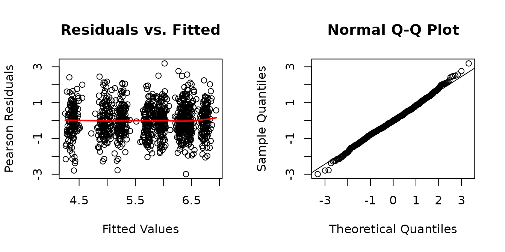
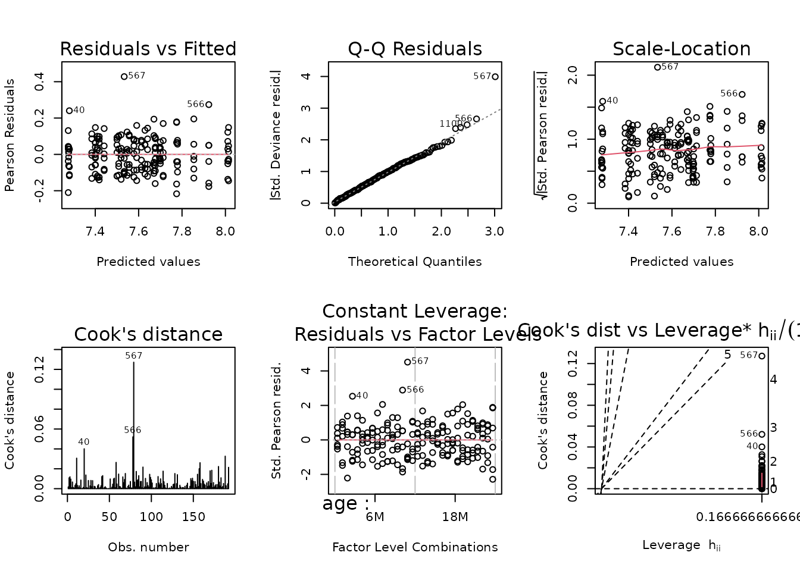
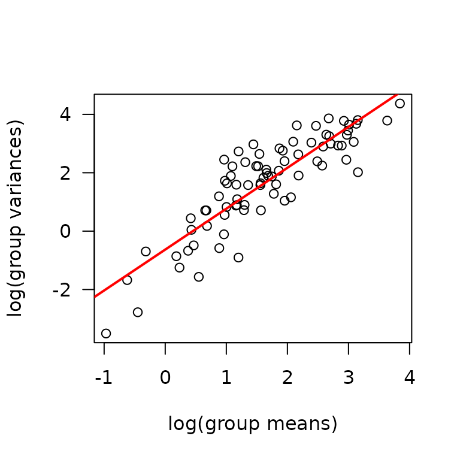
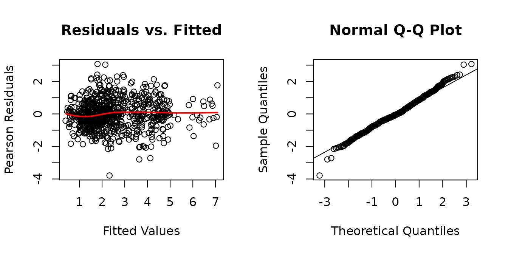
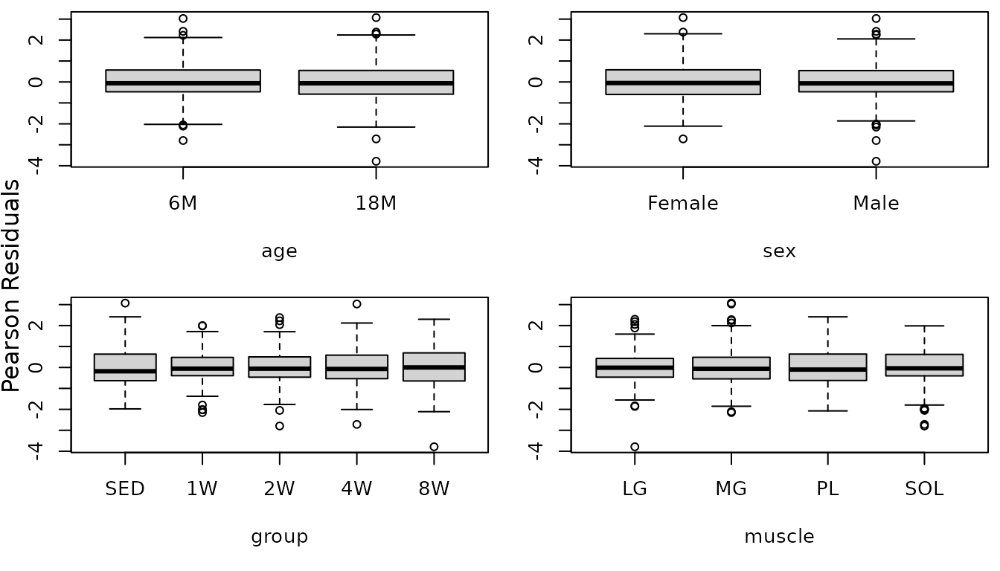
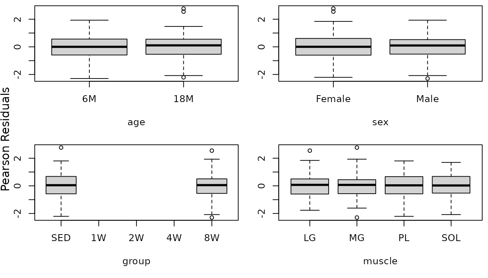

Statistical analyses of muscle-specific measures
Tyler Sagendorf
15 July, 2023
Source:vignettes/MUSCLES_STATS.Rmd
MUSCLES_STATS.Rmd
# Required packages
library(MotrpacRatTrainingPhysiologyData)
library(ggplot2)
library(MASS)
library(dplyr)
library(emmeans)
library(tibble)
library(tidyr)
library(purrr)
theme_set(theme_bw()) # base plot themeRegression Models
Since all measures that we will explore are strictly positive, we will fit log-link generalized linear models (GLM) using either the Gaussian, quasi-Poisson, gamma, or inverse Gaussian distributions, depending on the observed mean-variance relationship. We will determine the mean-variance relationship with code from Dunn and Smyth[1] (pg. 429–430). If there are problems with the model diagnostic plots, we will instead transform the response and fit a Gaussian GLM. If the response is log transformed, an identity link will be used; otherwise, we will retain the log link so that contrasts are ratios. Outliers will be inspected and removed if they are influential. We will report all observations that may be removed, as well as the reason for doing so.
Terminal Weight
ggplot(MUSCLES, aes(x = group, y = term_weight)) +
geom_point(na.rm = TRUE, alpha = 0.5,
position = position_jitter(width = 0.1, height = 0)) +
facet_grid(muscle ~ age + sex, scales = "free_y") +
theme(axis.text.x = element_text(angle = 90, hjust = 1, vjust = 0.5))We will check the mean-variance relationship.
mv <- MUSCLES %>%
group_by(sex, group, age, muscle) %>%
summarise(mn = mean(term_weight, na.rm = TRUE),
vr = var(term_weight, na.rm = TRUE))
fit.mv <- lm(log(vr) ~ log(mn), data = mv)
coef(fit.mv)
#> (Intercept) log(mn)
#> -3.654075 1.671691
plot(log(vr) ~ log(mn), data = mv, las = 1, pch = 19,
xlab = "log(group means)", ylab = "log(group variances)")
abline(coef(fit.mv), lwd = 2)
The slope is close to 2, so a log-link Gamma GLM may be a appropriate.
fit.term <- glm(term_weight ~ age * sex * group * muscle,
family = Gamma("log"),
data = MUSCLES)
plot_lm(fit.term)
In addition to several outliers (224, 868, 907), the right tail of the QQ-plot deviates from the line. We will try a log-link Gaussian GLM with reciprocal group variance weights.
wt.term <- MUSCLES %>%
group_by(age, sex, group, muscle) %>%
mutate(1 / var(term_weight, na.rm = TRUE)) %>%
pull(-1)
fit.term <- update(fit.term, family = gaussian("log"),
weights = wt.term)
plot_lm(fit.term)The diagnostic plots look fine. We will try to simplify the model.
anova(fit.term, test = "F")
#> Analysis of Deviance Table
#>
#> Model: gaussian, link: log
#>
#> Response: term_weight
#>
#> Terms added sequentially (first to last)
#>
#>
#> Df Deviance Resid. Df Resid. Dev F Pr(>F)
#> NULL 1115 149426
#> age 1 956 1114 148470 956.2178 < 2.2e-16 ***
#> sex 1 12071 1113 136399 12071.2396 < 2.2e-16 ***
#> group 4 855 1109 135544 213.6843 < 2.2e-16 ***
#> muscle 3 134046 1106 1498 44682.0353 < 2.2e-16 ***
#> age:sex 1 3 1105 1495 2.7398 0.0981791 .
#> age:group 4 19 1101 1476 4.6815 0.0009516 ***
#> sex:group 4 15 1097 1461 3.7251 0.0051156 **
#> age:muscle 3 103 1094 1358 34.4961 < 2.2e-16 ***
#> sex:muscle 3 204 1091 1153 68.1600 < 2.2e-16 ***
#> group:muscle 12 21 1079 1133 1.7314 0.0554281 .
#> age:sex:group 4 48 1075 1085 11.9550 1.683e-09 ***
#> age:sex:muscle 3 7 1072 1078 2.2389 0.0821684 .
#> age:group:muscle 12 23 1060 1055 1.9056 0.0301325 *
#> sex:group:muscle 12 8 1048 1047 0.6534 0.7968241
#> age:sex:group:muscle 12 11 1036 1036 0.9541 0.4915653
#> ---
#> Signif. codes: 0 '***' 0.001 '**' 0.01 '*' 0.05 '.' 0.1 ' ' 1
fit.term.1 <- update(fit.term,
formula = . ~ (age + sex + group + muscle) ^ 2 +
age:group:(sex + muscle))
anova(fit.term.1, fit.term, test = "F")
#> Analysis of Deviance Table
#>
#> Model 1: term_weight ~ age + sex + group + muscle + age:sex + age:group +
#> age:muscle + sex:group + sex:muscle + group:muscle + age:sex:group +
#> age:group:muscle
#> Model 2: term_weight ~ age * sex * group * muscle
#> Resid. Df Resid. Dev Df Deviance F Pr(>F)
#> 1 1063 1059.7
#> 2 1036 1036.0 27 23.658 0.8762 0.6484No significant difference between the models, so we will use the simpler one.
fit.term <- fit.term.1
plot_lm(fit.term)
The diagnostic plots still look fine.
summary(fit.term)
#>
#> Call:
#> glm(formula = term_weight ~ age + sex + group + muscle + age:sex +
#> age:group + age:muscle + sex:group + sex:muscle + group:muscle +
#> age:sex:group + age:group:muscle, family = gaussian("log"),
#> data = MUSCLES, weights = wt.term)
#>
#> Coefficients:
#> Estimate Std. Error t value Pr(>|t|)
#> (Intercept) 6.3019612 0.0132870 474.294 < 2e-16 ***
#> age18M -0.0146530 0.0192490 -0.761 0.446684
#> sexMale 0.4729603 0.0145869 32.424 < 2e-16 ***
#> group1W 0.0356413 0.0141699 2.515 0.012040 *
#> group2W 0.0597721 0.0180632 3.309 0.000968 ***
#> group4W 0.0287757 0.0194855 1.477 0.140032
#> group8W 0.0086814 0.0171908 0.505 0.613661
#> muscleMG -0.3563894 0.0177682 -20.058 < 2e-16 ***
#> musclePL -1.1108105 0.0164384 -67.574 < 2e-16 ***
#> muscleSOL -2.0038037 0.0228890 -87.544 < 2e-16 ***
#> age18M:sexMale -0.0246897 0.0188781 -1.308 0.191207
#> age18M:group1W -0.0114019 0.0238925 -0.477 0.633306
#> age18M:group2W -0.0213853 0.0261563 -0.818 0.413769
#> age18M:group4W -0.0065119 0.0255149 -0.255 0.798603
#> age18M:group8W 0.0397021 0.0245849 1.615 0.106630
#> age18M:muscleMG 0.0226710 0.0225232 1.007 0.314374
#> age18M:musclePL 0.0649082 0.0288255 2.252 0.024541 *
#> age18M:muscleSOL 0.0823581 0.0354477 2.323 0.020347 *
#> sexMale:group1W -0.0480844 0.0172313 -2.791 0.005357 **
#> sexMale:group2W -0.0784745 0.0185047 -4.241 2.42e-05 ***
#> sexMale:group4W -0.0935538 0.0189033 -4.949 8.66e-07 ***
#> sexMale:group8W -0.0326008 0.0173049 -1.884 0.059850 .
#> sexMale:muscleMG 0.0554699 0.0097927 5.664 1.90e-08 ***
#> sexMale:musclePL 0.0605911 0.0100133 6.051 1.99e-09 ***
#> sexMale:muscleSOL 0.1587003 0.0119031 13.333 < 2e-16 ***
#> group1W:muscleMG -0.0195436 0.0211184 -0.925 0.354953
#> group2W:muscleMG -0.0220354 0.0239112 -0.922 0.356972
#> group4W:muscleMG -0.0060104 0.0244483 -0.246 0.805851
#> group8W:muscleMG 0.0159163 0.0224694 0.708 0.478882
#> group1W:musclePL 0.0057815 0.0189527 0.305 0.760389
#> group2W:musclePL 0.0114130 0.0228980 0.498 0.618284
#> group4W:musclePL 0.0265608 0.0245255 1.083 0.279061
#> group8W:musclePL 0.0375684 0.0215867 1.740 0.082087 .
#> group1W:muscleSOL 0.0577265 0.0255326 2.261 0.023968 *
#> group2W:muscleSOL 0.0404823 0.0285222 1.419 0.156098
#> group4W:muscleSOL 0.0449698 0.0309714 1.452 0.146802
#> group8W:muscleSOL 0.0426421 0.0282057 1.512 0.130875
#> age18M:sexMale:group1W 0.0402798 0.0244438 1.648 0.099678 .
#> age18M:sexMale:group2W 0.0797563 0.0258422 3.086 0.002079 **
#> age18M:sexMale:group4W 0.1075711 0.0257356 4.180 3.16e-05 ***
#> age18M:sexMale:group8W -0.0385812 0.0242950 -1.588 0.112577
#> age18M:group1W:muscleMG 0.0060399 0.0290242 0.208 0.835191
#> age18M:group2W:muscleMG 0.0140011 0.0322267 0.434 0.664046
#> age18M:group4W:muscleMG -0.0043493 0.0317504 -0.137 0.891068
#> age18M:group8W:muscleMG -0.0016710 0.0302431 -0.055 0.955948
#> age18M:group1W:musclePL 0.0198273 0.0356558 0.556 0.578277
#> age18M:group2W:musclePL -0.0024163 0.0364373 -0.066 0.947140
#> age18M:group4W:musclePL -0.0003876 0.0362740 -0.011 0.991477
#> age18M:group8W:musclePL -0.0184459 0.0346814 -0.532 0.594929
#> age18M:group1W:muscleSOL -0.0621118 0.0422192 -1.471 0.141540
#> age18M:group2W:muscleSOL -0.0706492 0.0433900 -1.628 0.103771
#> age18M:group4W:muscleSOL -0.0382075 0.0441286 -0.866 0.386783
#> age18M:group8W:muscleSOL 0.0428531 0.0427096 1.003 0.315916
#> ---
#> Signif. codes: 0 '***' 0.001 '**' 0.01 '*' 0.05 '.' 0.1 ' ' 1
#>
#> (Dispersion parameter for gaussian family taken to be 0.9968564)
#>
#> Null deviance: 149426.1 on 1115 degrees of freedom
#> Residual deviance: 1059.7 on 1063 degrees of freedom
#> AIC: 9836.2
#>
#> Number of Fisher Scoring iterations: 4Mean Cross-Sectional Area
MUSCLES %>%
filter(!is.na(mean_CSA)) %>%
ggplot(aes(x = group, y = mean_CSA)) +
geom_point(na.rm = TRUE, alpha = 0.5,
position = position_jitter(width = 0.1, height = 0)) +
facet_grid(muscle ~ age + sex, scales = "free_y") +
theme(axis.text.x = element_text(angle = 90, hjust = 1, vjust = 0.5))
We will check the mean-variance relationship.
mv <- MUSCLES %>%
group_by(sex, group, age, muscle) %>%
summarise(mn = mean(mean_CSA, na.rm = TRUE),
vr = var(mean_CSA, na.rm = TRUE))
fit.mv <- lm(log(vr) ~ log(mn), data = mv)
coef(fit.mv)
#> (Intercept) log(mn)
#> -8.772808 2.523308
plot(log(vr) ~ log(mn), data = mv, las = 1, pch = 19,
xlab = "log(group means)", ylab = "log(group variances)")
abline(coef(fit.mv), lwd = 2)The slope suggests a variance function approximately of the form \(V(\mu) = \mu^{2.5}\). This is intermediate between the gamma and inverse Gaussian distributions. We will try a gamma GLM.
fit.area <- glm(mean_CSA ~ age * sex * group * muscle,
family = Gamma("log"),
data = MUSCLES)
plot_lm(fit.area)
Observation 567 is outlying.
MUSCLES %>%
mutate(idx = 1:n()) %>%
group_by(age, sex, group, muscle) %>%
filter(567 %in% idx, !is.na(mean_CSA)) %>%
arrange(-mean_CSA) %>%
relocate(idx, .before = everything())
#> # A tibble: 6 × 12
#> # Groups: age, sex, group, muscle [1]
#> idx pid sex group age muscle iowa term_weight mean_CSA glycogen
#> <int> <chr> <fct> <fct> <fct> <chr> <chr> <dbl> <dbl> <dbl>
#> 1 567 10025707 Male 8W 6M PL NA 337 2670 10.3
#> 2 603 10027408 Male 8W 6M PL NA 319 1829 8.53
#> 3 607 10027912 Male 8W 6M PL NA 325 1694 7.97
#> 4 563 10025626 Male 8W 6M PL NA 316 1679 7.62
#> 5 595 10027165 Male 8W 6M PL NA 320 1679 6.74
#> 6 591 10027084 Male 8W 6M PL NA 333 1667 6.03
#> # ℹ 2 more variables: capillary_contacts <dbl>, citrate_synthase <dbl>The other measures are high for observation 567, relative to the rest of the group, so we will keep this observation in the model.
anova(fit.area, test = "F")
#> Analysis of Deviance Table
#>
#> Model: Gamma, link: log
#>
#> Response: mean_CSA
#>
#> Terms added sequentially (first to last)
#>
#>
#> Df Deviance Resid. Df Resid. Dev F Pr(>F)
#> NULL 191 8.9941
#> age 1 0.0041 190 8.9900 0.3840 0.53638
#> sex 1 2.4577 189 6.5322 227.4807 < 2.2e-16 ***
#> group 1 0.0485 188 6.4838 4.4854 0.03573 *
#> muscle 3 3.4171 185 3.0667 105.4239 < 2.2e-16 ***
#> age:sex 1 0.2680 184 2.7987 24.8019 1.631e-06 ***
#> age:group 1 0.0024 183 2.7963 0.2261 0.63507
#> sex:group 1 0.0009 182 2.7954 0.0816 0.77545
#> age:muscle 3 0.4798 179 2.3156 14.8038 1.490e-08 ***
#> sex:muscle 3 0.0129 176 2.3027 0.3993 0.75368
#> group:muscle 3 0.0584 173 2.2443 1.8003 0.14928
#> age:sex:group 1 0.0098 172 2.2345 0.9069 0.34238
#> age:sex:muscle 3 0.3694 169 1.8651 11.3974 8.166e-07 ***
#> age:group:muscle 3 0.0535 166 1.8116 1.6513 0.17972
#> sex:group:muscle 3 0.0153 163 1.7962 0.4725 0.70184
#> age:sex:group:muscle 3 0.0999 160 1.6964 3.0814 0.02909 *
#> ---
#> Signif. codes: 0 '***' 0.001 '**' 0.01 '*' 0.05 '.' 0.1 ' ' 1The 4-way interaction is significant, so we will not remove any terms.
summary(fit.area)
#>
#> Call:
#> glm(formula = mean_CSA ~ age * sex * group * muscle, family = Gamma("log"),
#> data = MUSCLES)
#>
#> Coefficients:
#> Estimate Std. Error t value Pr(>|t|)
#> (Intercept) 7.70007 0.04243 181.457 < 2e-16 ***
#> age18M -0.02313 0.06001 -0.385 0.70041
#> sexMale 0.31449 0.06001 5.240 4.99e-07 ***
#> group8W -0.07082 0.06001 -1.180 0.23970
#> muscleMG -0.28179 0.06001 -4.696 5.68e-06 ***
#> musclePL -0.42443 0.06001 -7.073 4.48e-11 ***
#> muscleSOL -0.41937 0.06001 -6.988 7.11e-11 ***
#> age18M:sexMale -0.27824 0.08487 -3.278 0.00128 **
#> age18M:group8W 0.09078 0.08487 1.070 0.28640
#> sexMale:group8W 0.06734 0.08487 0.794 0.42866
#> age18M:muscleMG 0.19596 0.08487 2.309 0.02223 *
#> age18M:musclePL 0.15734 0.08487 1.854 0.06559 .
#> age18M:muscleSOL 0.12653 0.08487 1.491 0.13797
#> sexMale:muscleMG 0.12168 0.08487 1.434 0.15361
#> sexMale:musclePL -0.08996 0.08487 -1.060 0.29075
#> sexMale:muscleSOL -0.04839 0.08487 -0.570 0.56939
#> group8W:muscleMG 0.17178 0.08487 2.024 0.04463 *
#> group8W:musclePL 0.07278 0.08487 0.858 0.39241
#> group8W:muscleSOL 0.19044 0.08487 2.244 0.02621 *
#> age18M:sexMale:group8W -0.02137 0.12002 -0.178 0.85890
#> age18M:sexMale:muscleMG -0.07853 0.12002 -0.654 0.51388
#> age18M:sexMale:musclePL 0.28511 0.12002 2.375 0.01871 *
#> age18M:sexMale:muscleSOL 0.18447 0.12002 1.537 0.12628
#> age18M:group8W:muscleMG -0.17001 0.12002 -1.416 0.15858
#> age18M:group8W:musclePL -0.06155 0.12002 -0.513 0.60876
#> age18M:group8W:muscleSOL -0.19397 0.12002 -1.616 0.10804
#> sexMale:group8W:muscleMG -0.09928 0.12002 -0.827 0.40937
#> sexMale:group8W:musclePL -0.03595 0.12002 -0.300 0.76493
#> sexMale:group8W:muscleSOL -0.22561 0.12002 -1.880 0.06196 .
#> age18M:sexMale:group8W:muscleMG 0.03747 0.16974 0.221 0.82556
#> age18M:sexMale:group8W:musclePL -0.10405 0.16974 -0.613 0.54074
#> age18M:sexMale:group8W:muscleSOL 0.38185 0.16974 2.250 0.02583 *
#> ---
#> Signif. codes: 0 '***' 0.001 '**' 0.01 '*' 0.05 '.' 0.1 ' ' 1
#>
#> (Dispersion parameter for Gamma family taken to be 0.0108042)
#>
#> Null deviance: 8.9941 on 191 degrees of freedom
#> Residual deviance: 1.6964 on 160 degrees of freedom
#> (924 observations deleted due to missingness)
#> AIC: 2617.5
#>
#> Number of Fisher Scoring iterations: 4Glycogen
ggplot(MUSCLES, aes(x = group, y = glycogen)) +
geom_point(na.rm = TRUE, alpha = 0.5,
position = position_jitter(width = 0.1, height = 0)) +
facet_grid(muscle ~ age + sex, scales = "free_y") +
theme(axis.text.x = element_text(angle = 90, hjust = 1, vjust = 0.5))
We will check the mean-variance relationship.
mv <- MUSCLES %>%
group_by(sex, group, age, muscle) %>%
summarise(mn = mean(glycogen, na.rm = TRUE),
vr = var(glycogen, na.rm = TRUE))
fit.mv <- lm(log(vr) ~ log(mn), data = mv)
coef(fit.mv)
#> (Intercept) log(mn)
#> -0.6326815 1.4008057
plot(log(vr) ~ log(mn), data = mv, las = 1, pch = 19,
xlab = "log(group means)", ylab = "log(group variances)")
abline(coef(fit.mv), lwd = 2)The slope suggests a variance function approximately of the form \(V(\mu) = \mu^{1.4}\). This is intermediate between the Poisson and gamma distributions. We will fit a log-link gamma GLM.
fit.glyc <- glm(glycogen ~ age * sex * group * muscle,
family = Gamma("log"),
data = MUSCLES)
plot_lm(fit.glyc)It seems like the gamma distribution over-corrects for the mean-variance relationship at higher values. We will try a quasi-Poisson instead.
fit.glyc <- update(fit.glyc, family = quasipoisson("log"))
plot_lm(fit.glyc)We observe an increasing mean-variance trend at lower values that stabilizes at higher values: the opposite of what we saw with the gamma. We will try a log-link Gaussian with reciprocal group variance weights.
wt.glyc <- MUSCLES %>%
group_by(age, sex, group, muscle) %>%
mutate(1 / var(glycogen, na.rm = TRUE)) %>%
pull(-1)
fit.glyc <- update(fit.glyc, family = gaussian("log"),
weights = wt.glyc)
plot_lm(fit.glyc)The diagnostic plots look much better, though there may be some slight deviation in the tails of the QQ-plot. We may be able to fix this by simplifying the model.
anova(fit.glyc, test = "F")
#> Analysis of Deviance Table
#>
#> Model: gaussian, link: log
#>
#> Response: glycogen
#>
#> Terms added sequentially (first to last)
#>
#>
#> Df Deviance Resid. Df Resid. Dev F Pr(>F)
#> NULL 775 5352.2
#> age 1 671.69 774 4680.6 671.6851 < 2.2e-16 ***
#> sex 1 231.62 773 4448.9 231.6230 < 2.2e-16 ***
#> group 4 836.98 769 3612.0 209.2443 < 2.2e-16 ***
#> muscle 3 2266.79 766 1345.2 755.5962 < 2.2e-16 ***
#> age:sex 1 132.61 765 1212.5 132.6147 < 2.2e-16 ***
#> age:group 4 26.50 761 1186.1 6.6238 3.105e-05 ***
#> sex:group 4 118.46 757 1067.6 29.6147 < 2.2e-16 ***
#> age:muscle 3 55.51 754 1012.1 18.5048 1.470e-11 ***
#> sex:muscle 3 50.53 751 961.6 16.8432 1.429e-10 ***
#> group:muscle 12 164.03 739 797.5 13.6690 < 2.2e-16 ***
#> age:sex:group 4 27.39 735 770.1 6.8471 2.081e-05 ***
#> age:sex:muscle 3 1.84 732 768.3 0.6144 0.6058426
#> age:group:muscle 12 35.67 720 732.6 2.9723 0.0004627 ***
#> sex:group:muscle 12 19.40 708 713.2 1.6167 0.0821792 .
#> age:sex:group:muscle 12 17.22 696 696.0 1.4353 0.1445735
#> ---
#> Signif. codes: 0 '***' 0.001 '**' 0.01 '*' 0.05 '.' 0.1 ' ' 1
fit.glyc.1 <- update(fit.glyc,
formula = . ~ (age + sex + group + muscle) ^ 2 +
age:group:(sex + muscle))
anova(fit.glyc.1, fit.glyc, test = "F")
#> Analysis of Deviance Table
#>
#> Model 1: glycogen ~ age + sex + group + muscle + age:sex + age:group +
#> age:muscle + sex:group + sex:muscle + group:muscle + age:sex:group +
#> age:group:muscle
#> Model 2: glycogen ~ age * sex * group * muscle
#> Resid. Df Resid. Dev Df Deviance F Pr(>F)
#> 1 723 734.4
#> 2 696 696.0 27 38.397 1.4221 0.07721 .
#> ---
#> Signif. codes: 0 '***' 0.001 '**' 0.01 '*' 0.05 '.' 0.1 ' ' 1There is no significant difference between the models, so we will use the simpler one.
fit.glyc <- fit.glyc.1
plot_lm(fit.glyc)
The diagnostic plots look fine.
summary(fit.glyc)
#>
#> Call:
#> glm(formula = glycogen ~ age + sex + group + muscle + age:sex +
#> age:group + age:muscle + sex:group + sex:muscle + group:muscle +
#> age:sex:group + age:group:muscle, family = gaussian("log"),
#> data = MUSCLES, weights = wt.glyc)
#>
#> Coefficients:
#> Estimate Std. Error t value Pr(>|t|)
#> (Intercept) -0.907998 0.142087 -6.390 2.96e-10 ***
#> age18M 1.695147 0.234683 7.223 1.29e-12 ***
#> sexMale 0.836997 0.145614 5.748 1.33e-08 ***
#> group1W 0.260601 0.222101 1.173 0.241044
#> group2W 0.502379 0.179844 2.793 0.005354 **
#> group4W 0.649591 0.254951 2.548 0.011043 *
#> group8W 1.834610 0.195607 9.379 < 2e-16 ***
#> muscleMG 1.387055 0.199944 6.937 8.89e-12 ***
#> musclePL 1.541667 0.231300 6.665 5.24e-11 ***
#> muscleSOL 3.502868 0.179817 19.480 < 2e-16 ***
#> age18M:sexMale -0.972569 0.158784 -6.125 1.49e-09 ***
#> age18M:group1W -0.602941 0.298406 -2.021 0.043695 *
#> age18M:group2W -0.854418 0.280192 -3.049 0.002377 **
#> age18M:group4W -0.223455 0.334520 -0.668 0.504355
#> age18M:group8W -0.730284 0.289726 -2.521 0.011930 *
#> age18M:muscleMG -1.053391 0.411335 -2.561 0.010642 *
#> age18M:musclePL -0.722199 0.359004 -2.012 0.044625 *
#> age18M:muscleSOL -0.671569 0.262047 -2.563 0.010585 *
#> sexMale:group1W 0.002923 0.163163 0.018 0.985711
#> sexMale:group2W -0.178349 0.165803 -1.076 0.282433
#> sexMale:group4W -0.210485 0.161664 -1.302 0.193334
#> sexMale:group8W -0.150964 0.138744 -1.088 0.276924
#> sexMale:muscleMG -0.061094 0.117072 -0.522 0.601934
#> sexMale:musclePL -0.275136 0.105762 -2.601 0.009473 **
#> sexMale:muscleSOL -0.449953 0.088692 -5.073 4.98e-07 ***
#> group1W:muscleMG -0.386281 0.270395 -1.429 0.153556
#> group2W:muscleMG -0.395610 0.271865 -1.455 0.146056
#> group4W:muscleMG -0.150129 0.357874 -0.420 0.674973
#> group8W:muscleMG -0.853667 0.253826 -3.363 0.000811 ***
#> group1W:musclePL 0.342782 0.299133 1.146 0.252207
#> group2W:musclePL -0.008818 0.292100 -0.030 0.975926
#> group4W:musclePL -0.205297 0.329352 -0.623 0.533261
#> group8W:musclePL -0.651830 0.277379 -2.350 0.019043 *
#> group1W:muscleSOL -0.551553 0.252345 -2.186 0.029157 *
#> group2W:muscleSOL -0.550499 0.220236 -2.500 0.012654 *
#> group4W:muscleSOL -0.791734 0.279610 -2.832 0.004761 **
#> group8W:muscleSOL -1.529553 0.223785 -6.835 1.75e-11 ***
#> age18M:sexMale:group1W 0.677029 0.208349 3.250 0.001210 **
#> age18M:sexMale:group2W 0.856415 0.211980 4.040 5.92e-05 ***
#> age18M:sexMale:group4W 0.407316 0.209914 1.940 0.052720 .
#> age18M:sexMale:group8W 0.136821 0.193669 0.706 0.480123
#> age18M:group1W:muscleMG 0.874143 0.476593 1.834 0.067043 .
#> age18M:group2W:muscleMG 0.735014 0.476698 1.542 0.123538
#> age18M:group4W:muscleMG 0.236641 0.522771 0.453 0.650925
#> age18M:group8W:muscleMG 0.845711 0.468234 1.806 0.071307 .
#> age18M:group1W:musclePL -0.385360 0.416738 -0.925 0.355427
#> age18M:group2W:musclePL 0.286526 0.430258 0.666 0.505662
#> age18M:group4W:musclePL 0.139850 0.445120 0.314 0.753471
#> age18M:group8W:musclePL 0.854975 0.415346 2.058 0.039904 *
#> age18M:group1W:muscleSOL 0.276230 0.325633 0.848 0.396559
#> age18M:group2W:muscleSOL 0.227881 0.310261 0.734 0.462893
#> age18M:group4W:muscleSOL -0.201649 0.359064 -0.562 0.574565
#> age18M:group8W:muscleSOL 0.618326 0.316224 1.955 0.050927 .
#> ---
#> Signif. codes: 0 '***' 0.001 '**' 0.01 '*' 0.05 '.' 0.1 ' ' 1
#>
#> (Dispersion parameter for gaussian family taken to be 1.015794)
#>
#> Null deviance: 5352.2 on 775 degrees of freedom
#> Residual deviance: 734.4 on 723 degrees of freedom
#> (340 observations deleted due to missingness)
#> AIC: 3561.3
#>
#> Number of Fisher Scoring iterations: 7Capillary Contacts
filter(MUSCLES, !is.na(capillary_contacts)) %>%
ggplot(aes(x = group, y = capillary_contacts)) +
geom_point(na.rm = TRUE, alpha = 0.5,
position = position_jitter(width = 0.1, height = 0)) +
facet_grid(muscle ~ age + sex, scales = "free_y")
We will check the mean-variance relationship.
mv <- MUSCLES %>%
group_by(sex, group, age, muscle) %>%
summarise(mn = mean(capillary_contacts, na.rm = TRUE),
vr = var(capillary_contacts, na.rm = TRUE))
fit.mv <- lm(log(vr) ~ log(mn), data = mv)
coef(fit.mv)
#> (Intercept) log(mn)
#> -3.2282735 0.2335005
plot(log(vr) ~ log(mn), data = mv, las = 1, pch = 19,
xlab = "log(group means)", ylab = "log(group variances)")
abline(coef(fit.mv), lwd = 2)
The slope is close to 0, indicating constant variance. We will fit a log-link Gaussian GLM.
fit.cap <- glm(capillary_contacts ~ age * sex * group * muscle,
family = gaussian("log"),
data = MUSCLES)
plot_lm(fit.cap)
The diagnostic plots look fine. We will try to simplify the model.
anova(fit.cap, test = "F")
#> Analysis of Deviance Table
#>
#> Model: gaussian, link: log
#>
#> Response: capillary_contacts
#>
#> Terms added sequentially (first to last)
#>
#>
#> Df Deviance Resid. Df Resid. Dev F Pr(>F)
#> NULL 190 49.587
#> age 1 0.0051 189 49.582 0.0683 0.794143
#> sex 1 19.8305 188 29.752 264.1407 < 2.2e-16 ***
#> group 1 0.0113 187 29.740 0.1502 0.698865
#> muscle 3 13.6415 184 16.099 60.5681 < 2.2e-16 ***
#> age:sex 1 0.7483 183 15.351 9.9667 0.001907 **
#> age:group 1 0.0020 182 15.349 0.0269 0.869823
#> sex:group 1 0.0006 181 15.348 0.0082 0.927952
#> age:muscle 3 1.0488 178 14.299 4.6565 0.003791 **
#> sex:muscle 3 0.2271 175 14.072 1.0084 0.390670
#> group:muscle 3 0.3903 172 13.682 1.7329 0.162408
#> age:sex:group 1 0.3439 171 13.338 4.5813 0.033848 *
#> age:sex:muscle 3 0.3113 168 13.027 1.3823 0.250197
#> age:group:muscle 3 0.5887 165 12.438 2.6137 0.053159 .
#> sex:group:muscle 3 0.3466 162 12.091 1.5388 0.206573
#> age:sex:group:muscle 3 0.1543 159 11.937 0.6849 0.562536
#> ---
#> Signif. codes: 0 '***' 0.001 '**' 0.01 '*' 0.05 '.' 0.1 ' ' 1
fit.cap.1 <- update(fit.cap, formula = . ~ (age + sex + group + muscle) ^ 2 +
age:sex:group)
anova(fit.cap.1, fit.cap, test = "F")
#> Analysis of Deviance Table
#>
#> Model 1: capillary_contacts ~ age + sex + group + muscle + age:sex + age:group +
#> age:muscle + sex:group + sex:muscle + group:muscle + age:sex:group
#> Model 2: capillary_contacts ~ age * sex * group * muscle
#> Resid. Df Resid. Dev Df Deviance F Pr(>F)
#> 1 171 13.338
#> 2 159 11.937 12 1.4008 1.5549 0.1101There is no significant difference between the models, so we will use the simpler one.
fit.cap <- fit.cap.1
plot_lm(fit.cap)
The diagnostic plots look fine.
summary(fit.cap)
#>
#> Call:
#> glm(formula = capillary_contacts ~ age + sex + group + muscle +
#> age:sex + age:group + age:muscle + sex:group + sex:muscle +
#> group:muscle + age:sex:group, family = gaussian("log"), data = MUSCLES)
#>
#> Coefficients:
#> Estimate Std. Error t value Pr(>|t|)
#> (Intercept) 1.333776 0.023050 57.865 < 2e-16 ***
#> age18M -0.030937 0.027157 -1.139 0.256223
#> sexMale 0.142459 0.026067 5.465 1.61e-07 ***
#> group8W 0.051512 0.026670 1.931 0.055075 .
#> muscleMG -0.101255 0.030135 -3.360 0.000961 ***
#> musclePL 0.074832 0.028041 2.669 0.008349 **
#> muscleSOL 0.081408 0.027525 2.958 0.003540 **
#> age18M:sexMale 0.018723 0.027658 0.677 0.499363
#> age18M:group8W -0.044013 0.029662 -1.484 0.139698
#> age18M:muscleMG 0.073095 0.028894 2.530 0.012317 *
#> age18M:musclePL -0.026181 0.027334 -0.958 0.339507
#> age18M:muscleSOL 0.023190 0.026591 0.872 0.384364
#> sexMale:group8W -0.041838 0.027586 -1.517 0.131201
#> sexMale:muscleMG 0.019721 0.029260 0.674 0.501214
#> sexMale:musclePL -0.020191 0.027590 -0.732 0.465278
#> sexMale:muscleSOL 0.019712 0.026886 0.733 0.464440
#> group8W:muscleMG -0.052024 0.028869 -1.802 0.073298 .
#> group8W:musclePL -0.043067 0.027311 -1.577 0.116666
#> group8W:muscleSOL -0.008257 0.026571 -0.311 0.756367
#> age18M:sexMale:group8W 0.082196 0.039137 2.100 0.037176 *
#> ---
#> Signif. codes: 0 '***' 0.001 '**' 0.01 '*' 0.05 '.' 0.1 ' ' 1
#>
#> (Dispersion parameter for gaussian family taken to be 0.07799911)
#>
#> Null deviance: 49.587 on 190 degrees of freedom
#> Residual deviance: 13.338 on 171 degrees of freedom
#> (925 observations deleted due to missingness)
#> AIC: 75.656
#>
#> Number of Fisher Scoring iterations: 4Citrate Synthase
filter(MUSCLES, !is.na(citrate_synthase)) %>%
ggplot(aes(x = group, y = citrate_synthase)) +
geom_point(na.rm = TRUE, alpha = 0.5,
position = position_jitter(width = 0.1, height = 0)) +
facet_grid(muscle ~ age + sex, scales = "free_y") +
theme(axis.text.x = element_text(angle = 90, hjust = 1, vjust = 0.5))We will check the mean-variance relationship.
mv <- MUSCLES %>%
group_by(sex, group, age, muscle) %>%
summarise(mn = mean(citrate_synthase, na.rm = TRUE),
vr = var(citrate_synthase, na.rm = TRUE))
fit.mv <- lm(log(vr) ~ log(mn), data = mv)
coef(fit.mv)
#> (Intercept) log(mn)
#> -1.637787 1.752179
plot(log(vr) ~ log(mn), data = mv, las = 1, pch = 19,
xlab = "log(group means)", ylab = "log(group variances)")
abline(coef(fit.mv), lwd = 2)
The slope is close to 2, so a gamma GLM may be appropriate.
fit.citrate <- glm(citrate_synthase ~ age * sex * group * muscle,
family = Gamma("log"),
data = MUSCLES)
plot_lm(fit.citrate)
The right tail of the QQ-plot deviates drastically from the line. We will try a log-link Gaussian GLM with reciprocal group variance weights.
wt.citrate <- MUSCLES %>%
group_by(age, sex, group, muscle) %>%
mutate(1 / var(citrate_synthase, na.rm = TRUE)) %>%
pull(-1)
fit.citrate <- update(fit.citrate, family = gaussian("log"),
weights = wt.citrate)
plot_lm(fit.citrate)
The diagnostic plots look fine. We will try to simplify the model.
anova(fit.citrate, test = "F")
#> Analysis of Deviance Table
#>
#> Model: gaussian, link: log
#>
#> Response: citrate_synthase
#>
#> Terms added sequentially (first to last)
#>
#>
#> Df Deviance Resid. Df Resid. Dev F Pr(>F)
#> NULL 779 4899.0
#> age 1 602.29 778 4296.7 602.2881 < 2.2e-16 ***
#> sex 1 622.92 777 3673.8 622.9208 < 2.2e-16 ***
#> group 4 1204.83 773 2469.0 301.2073 < 2.2e-16 ***
#> muscle 3 198.09 770 2270.9 66.0294 < 2.2e-16 ***
#> age:sex 1 49.12 769 2221.8 49.1245 5.661e-12 ***
#> age:group 4 861.93 765 1359.9 215.4816 < 2.2e-16 ***
#> sex:group 4 42.65 761 1317.2 10.6613 2.163e-08 ***
#> age:muscle 3 200.79 758 1116.4 66.9290 < 2.2e-16 ***
#> sex:muscle 3 95.39 755 1021.0 31.7980 < 2.2e-16 ***
#> group:muscle 12 103.33 743 917.7 8.6111 2.091e-15 ***
#> age:sex:group 4 37.53 739 880.2 9.3813 2.171e-07 ***
#> age:sex:muscle 3 30.54 736 849.6 10.1785 1.442e-06 ***
#> age:group:muscle 12 96.11 724 753.5 8.0091 3.622e-14 ***
#> sex:group:muscle 12 30.01 712 723.5 2.5011 0.00321 **
#> age:sex:group:muscle 12 23.51 700 700.0 1.9595 0.02535 *
#> ---
#> Signif. codes: 0 '***' 0.001 '**' 0.01 '*' 0.05 '.' 0.1 ' ' 1All terms are significant!
summary(fit.citrate)
#>
#> Call:
#> glm(formula = citrate_synthase ~ age * sex * group * muscle,
#> family = gaussian("log"), data = MUSCLES, weights = wt.citrate)
#>
#> Coefficients:
#> Estimate Std. Error t value Pr(>|t|)
#> (Intercept) 3.68398 0.08257 44.619 < 2e-16 ***
#> age18M 1.39026 0.15593 8.916 < 2e-16 ***
#> sexMale 0.91033 0.12990 7.008 5.69e-12 ***
#> group1W 1.15603 0.11307 10.224 < 2e-16 ***
#> group2W 1.14282 0.12775 8.946 < 2e-16 ***
#> group4W 1.75645 0.12102 14.514 < 2e-16 ***
#> group8W 0.54711 0.14087 3.884 0.000113 ***
#> muscleMG 0.22484 0.10261 2.191 0.028767 *
#> musclePL 0.38959 0.19625 1.985 0.047516 *
#> muscleSOL 0.16982 0.10658 1.593 0.111521
#> age18M:sexMale -0.61151 0.22402 -2.730 0.006498 **
#> age18M:group1W -2.06948 0.18749 -11.038 < 2e-16 ***
#> age18M:group2W -1.92605 0.20132 -9.567 < 2e-16 ***
#> age18M:group4W -2.22850 0.19717 -11.303 < 2e-16 ***
#> age18M:group8W -0.22361 0.21719 -1.030 0.303570
#> sexMale:group1W -0.57917 0.18600 -3.114 0.001922 **
#> sexMale:group2W -0.24666 0.17765 -1.388 0.165443
#> sexMale:group4W -0.28674 0.16395 -1.749 0.080739 .
#> sexMale:group8W -0.19385 0.20454 -0.948 0.343596
#> age18M:muscleMG -0.71998 0.18784 -3.833 0.000138 ***
#> age18M:musclePL -0.73935 0.24352 -3.036 0.002485 **
#> age18M:muscleSOL -0.54867 0.21344 -2.571 0.010356 *
#> sexMale:muscleMG -0.12634 0.17520 -0.721 0.471070
#> sexMale:musclePL -0.64348 0.22968 -2.802 0.005225 **
#> sexMale:muscleSOL -0.15219 0.16306 -0.933 0.350985
#> group1W:muscleMG -0.11786 0.13907 -0.848 0.396995
#> group2W:muscleMG -0.31438 0.16620 -1.892 0.058958 .
#> group4W:muscleMG -0.24054 0.14757 -1.630 0.103551
#> group8W:muscleMG -0.24442 0.18328 -1.334 0.182777
#> group1W:musclePL -0.40017 0.24782 -1.615 0.106813
#> group2W:musclePL -0.52697 0.23260 -2.266 0.023782 *
#> group4W:musclePL -0.64146 0.22692 -2.827 0.004836 **
#> group8W:musclePL -0.15565 0.23589 -0.660 0.509573
#> group1W:muscleSOL 0.43021 0.15217 2.827 0.004831 **
#> group2W:muscleSOL 0.43361 0.15143 2.863 0.004317 **
#> group4W:muscleSOL -0.02908 0.14604 -0.199 0.842208
#> group8W:muscleSOL -0.08607 0.19362 -0.445 0.656779
#> age18M:sexMale:group1W 1.15915 0.31398 3.692 0.000240 ***
#> age18M:sexMale:group2W 0.78062 0.29904 2.610 0.009236 **
#> age18M:sexMale:group4W 0.89084 0.29413 3.029 0.002546 **
#> age18M:sexMale:group8W 0.32902 0.30769 1.069 0.285301
#> age18M:sexMale:muscleMG 0.29339 0.29731 0.987 0.324064
#> age18M:sexMale:musclePL 0.63666 0.30734 2.072 0.038677 *
#> age18M:sexMale:muscleSOL 0.11790 0.29570 0.399 0.690213
#> age18M:group1W:muscleMG 1.14972 0.24681 4.658 3.82e-06 ***
#> age18M:group2W:muscleMG 1.60644 0.24618 6.526 1.30e-10 ***
#> age18M:group4W:muscleMG 1.22221 0.23494 5.202 2.59e-07 ***
#> age18M:group8W:muscleMG 0.48860 0.28267 1.729 0.084330 .
#> age18M:group1W:musclePL 1.49065 0.29616 5.033 6.14e-07 ***
#> age18M:group2W:musclePL 1.46854 0.29560 4.968 8.51e-07 ***
#> age18M:group4W:musclePL 1.20362 0.29181 4.125 4.16e-05 ***
#> age18M:group8W:musclePL 0.21922 0.29795 0.736 0.462116
#> age18M:group1W:muscleSOL 0.71139 0.26808 2.654 0.008143 **
#> age18M:group2W:muscleSOL 0.68058 0.25774 2.641 0.008462 **
#> age18M:group4W:muscleSOL 0.92546 0.25064 3.692 0.000239 ***
#> age18M:group8W:muscleSOL 0.32315 0.28785 1.123 0.261975
#> sexMale:group1W:muscleMG -0.09340 0.23338 -0.400 0.689129
#> sexMale:group2W:muscleMG -0.04981 0.24397 -0.204 0.838299
#> sexMale:group4W:muscleMG 0.06597 0.22020 0.300 0.764562
#> sexMale:group8W:muscleMG 0.19209 0.27700 0.693 0.488255
#> sexMale:group1W:musclePL 0.27163 0.30587 0.888 0.374810
#> sexMale:group2W:musclePL 0.33246 0.27831 1.195 0.232660
#> sexMale:group4W:musclePL 0.45054 0.27080 1.664 0.096621 .
#> sexMale:group8W:musclePL 0.29338 0.28933 1.014 0.310937
#> sexMale:group1W:muscleSOL -0.25598 0.22718 -1.127 0.260233
#> sexMale:group2W:muscleSOL -0.37696 0.21356 -1.765 0.077982 .
#> sexMale:group4W:muscleSOL -0.26371 0.21182 -1.245 0.213556
#> sexMale:group8W:muscleSOL 0.15253 0.25969 0.587 0.557154
#> age18M:sexMale:group1W:muscleMG -0.40080 0.41493 -0.966 0.334394
#> age18M:sexMale:group2W:muscleMG -0.66157 0.39270 -1.685 0.092498 .
#> age18M:sexMale:group4W:muscleMG -0.82755 0.37887 -2.184 0.029272 *
#> age18M:sexMale:group8W:muscleMG -0.37911 0.41704 -0.909 0.363639
#> age18M:sexMale:group1W:musclePL -1.04985 0.41201 -2.548 0.011042 *
#> age18M:sexMale:group2W:musclePL -0.94816 0.39973 -2.372 0.017962 *
#> age18M:sexMale:group4W:musclePL -1.10091 0.38977 -2.825 0.004870 **
#> age18M:sexMale:group8W:musclePL -0.20667 0.39207 -0.527 0.598280
#> age18M:sexMale:group1W:muscleSOL -0.40234 0.39234 -1.026 0.305480
#> age18M:sexMale:group2W:muscleSOL -0.50456 0.37237 -1.355 0.175863
#> age18M:sexMale:group4W:muscleSOL -0.78764 0.37515 -2.100 0.036125 *
#> age18M:sexMale:group8W:muscleSOL -0.48846 0.39086 -1.250 0.211826
#> ---
#> Signif. codes: 0 '***' 0.001 '**' 0.01 '*' 0.05 '.' 0.1 ' ' 1
#>
#> (Dispersion parameter for gaussian family taken to be 1)
#>
#> Null deviance: 4899 on 779 degrees of freedom
#> Residual deviance: 700 on 700 degrees of freedom
#> (336 observations deleted due to missingness)
#> AIC: 7842.3
#>
#> Number of Fisher Scoring iterations: 5Comparisons
model_list <- list("Terminal Weight" = fit.term,
"Mean CSA" = fit.area,
"Glycogen" = fit.glyc,
"Capillary Contacts" = fit.cap,
"Citrate Synthase" = fit.citrate)
# Estimated marginal means
MUSCLES_EMM <- map(model_list, function(mod_i) {
emmeans(mod_i, specs = "group", by = c("age", "sex", "muscle"),
type = "response", infer = TRUE)
})
# Extract model info
model_df <- model_list %>%
map_chr(.f = ~ paste(deparse(.x[["call"]]), collapse = "")) %>%
enframe(name = "response",
value = "model") %>%
mutate(model = gsub("(?<=[\\s])\\s*|^\\s+|\\s+$", "", model, perl = TRUE),
model_type = sub("^([^\\(]+).*", "\\1", model),
formula = sub(".*formula = ([^,]+),.*", "\\1", model),
family = sub(".*family = ([^\\)]+\\)),.*", "\\1", model),
# if weights were used, they were reciprocal group variances
weights = ifelse(grepl("weights = ", model),
"reciprocal group variances", NA)) %>%
dplyr::select(-model)
# Results
MUSCLES_STATS <- MUSCLES_EMM %>%
map(function(emm_i) {
contrast(emm_i, method = "dunnett") %>%
summary(infer = TRUE) %>%
as.data.frame() %>%
rename(any_of(c(lower.CL = "asymp.LCL",
upper.CL = "asymp.UCL")))
}) %>%
enframe(name = "response") %>%
unnest(value) %>%
arrange(response) %>%
mutate(signif = cut(p.value,
breaks = c(0, 0.001, 0.01, 0.05, 1),
labels = c("***", "**", "*", ""),
include.lowest = TRUE, right = FALSE,
ordered_result = TRUE)) %>%
left_join(model_df, by = "response") %>%
pivot_longer(cols = contains(".ratio"),
names_to = "statistic_type",
values_to = "statistic",
values_drop_na = TRUE) %>%
relocate(starts_with("statistic"), .before = p.value) %>%
relocate(signif, .after = p.value) %>%
relocate(ends_with("CL", ignore.case = FALSE), .before = null)See ?MUSCLES_STATS for details.
print.data.frame(head(MUSCLES_STATS))
#> response contrast age sex muscle ratio SE df
#> 1 Capillary Contacts 8W / SED 6M Female LG 1.0528621 0.02807945 171
#> 2 Capillary Contacts 8W / SED 18M Female LG 1.0075274 0.02759367 171
#> 3 Capillary Contacts 8W / SED 6M Male LG 1.0097208 0.02519419 171
#> 4 Capillary Contacts 8W / SED 18M Male LG 1.0490205 0.02591136 171
#> 5 Capillary Contacts 8W / SED 6M Female MG 0.9994881 0.02816990 171
#> 6 Capillary Contacts 8W / SED 18M Female MG 0.9564516 0.02715942 171
#> lower.CL upper.CL null statistic_type statistic p.value signif
#> 1 0.9988688 1.109774 1 t.ratio 1.93149441 0.05507541
#> 2 0.9545054 1.063495 1 t.ratio 0.27381681 0.78455587
#> 3 0.9611940 1.060698 1 t.ratio 0.38770332 0.69871777
#> 4 0.9991001 1.101435 1 t.ratio 1.93748370 0.05433388
#> 5 0.9454010 1.056669 1 t.ratio -0.01816797 0.98552604
#> 6 0.9043155 1.011593 1 t.ratio -1.56800627 0.11872829
#> model_type
#> 1 glm
#> 2 glm
#> 3 glm
#> 4 glm
#> 5 glm
#> 6 glm
#> formula
#> 1 capillary_contacts ~ age + sex + group + muscle + age:sex + age:group + age:muscle + sex:group + sex:muscle + group:muscle + age:sex:group
#> 2 capillary_contacts ~ age + sex + group + muscle + age:sex + age:group + age:muscle + sex:group + sex:muscle + group:muscle + age:sex:group
#> 3 capillary_contacts ~ age + sex + group + muscle + age:sex + age:group + age:muscle + sex:group + sex:muscle + group:muscle + age:sex:group
#> 4 capillary_contacts ~ age + sex + group + muscle + age:sex + age:group + age:muscle + sex:group + sex:muscle + group:muscle + age:sex:group
#> 5 capillary_contacts ~ age + sex + group + muscle + age:sex + age:group + age:muscle + sex:group + sex:muscle + group:muscle + age:sex:group
#> 6 capillary_contacts ~ age + sex + group + muscle + age:sex + age:group + age:muscle + sex:group + sex:muscle + group:muscle + age:sex:group
#> family weights
#> 1 gaussian("log") <NA>
#> 2 gaussian("log") <NA>
#> 3 gaussian("log") <NA>
#> 4 gaussian("log") <NA>
#> 5 gaussian("log") <NA>
#> 6 gaussian("log") <NA>Session Info
sessionInfo()
#> R version 4.3.1 (2023-06-16)
#> Platform: x86_64-pc-linux-gnu (64-bit)
#> Running under: Ubuntu 22.04.2 LTS
#>
#> Matrix products: default
#> BLAS: /usr/lib/x86_64-linux-gnu/openblas-pthread/libblas.so.3
#> LAPACK: /usr/lib/x86_64-linux-gnu/openblas-pthread/libopenblasp-r0.3.20.so; LAPACK version 3.10.0
#>
#> locale:
#> [1] LC_CTYPE=C.UTF-8 LC_NUMERIC=C LC_TIME=C.UTF-8
#> [4] LC_COLLATE=C.UTF-8 LC_MONETARY=C.UTF-8 LC_MESSAGES=C.UTF-8
#> [7] LC_PAPER=C.UTF-8 LC_NAME=C LC_ADDRESS=C
#> [10] LC_TELEPHONE=C LC_MEASUREMENT=C.UTF-8 LC_IDENTIFICATION=C
#>
#> time zone: UTC
#> tzcode source: system (glibc)
#>
#> attached base packages:
#> [1] stats graphics grDevices utils datasets methods base
#>
#> other attached packages:
#> [1] purrr_1.0.1
#> [2] tidyr_1.3.0
#> [3] tibble_3.2.1
#> [4] emmeans_1.8.7
#> [5] dplyr_1.1.2
#> [6] MASS_7.3-60
#> [7] ggplot2_3.4.2
#> [8] MotrpacRatTrainingPhysiologyData_0.1.0
#>
#> loaded via a namespace (and not attached):
#> [1] sass_0.4.6 utf8_1.2.3 generics_0.1.3 rstatix_0.7.2
#> [5] stringi_1.7.12 digest_0.6.33 magrittr_2.0.3 estimability_1.4.1
#> [9] evaluate_0.21 grid_4.3.1 mvtnorm_1.2-2 fastmap_1.1.1
#> [13] rprojroot_2.0.3 jsonlite_1.8.7 backports_1.4.1 fansi_1.0.4
#> [17] scales_1.2.1 textshaping_0.3.6 jquerylib_0.1.4 abind_1.4-5
#> [21] cli_3.6.1 rlang_1.1.1 munsell_0.5.0 withr_2.5.0
#> [25] cachem_1.0.8 yaml_2.3.7 ggbeeswarm_0.7.2 tools_4.3.1
#> [29] memoise_2.0.1 ggsignif_0.6.4 colorspace_2.1-0 ggpubr_0.6.0
#> [33] broom_1.0.5 vctrs_0.6.3 R6_2.5.1 lifecycle_1.0.3
#> [37] stringr_1.5.0 car_3.1-2 fs_1.6.2 vipor_0.4.5
#> [41] ragg_1.2.5 pkgconfig_2.0.3 beeswarm_0.4.0 desc_1.4.2
#> [45] pkgdown_2.0.7 pillar_1.9.0 bslib_0.5.0 gtable_0.3.3
#> [49] glue_1.6.2 systemfonts_1.0.4 highr_0.10 xfun_0.39
#> [53] tidyselect_1.2.0 knitr_1.43 farver_2.1.1 htmltools_0.5.5
#> [57] labeling_0.4.2 carData_3.0-5 rmarkdown_2.23 compiler_4.3.1